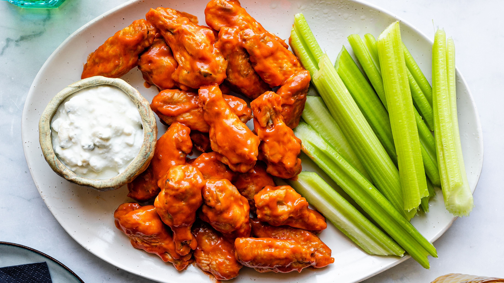

Hot Wings

Restaurant-Style Buffalo Chicken Wings
There's no need to go out or even order in when you're craving delicious, spicy hot wings. Instead, next time you want your Buffalo wing fix, try this top-rated recipe. Grab your favorite dipping sauce and celery sticks because this is about to be your new go-to hot wings recipe.
Ingredients
- ½ cup all-purpose flour
- ¼ teaspoon ground paprika
- ¼ teaspoon cayenne pepper
- ¼ teaspoon salt
- 10 chicken wings
- 2 cups vegetable oil for frying, or as needed
- ¼ cup butter
- ¼ cup hot sauce
- 1 pinch ground black pepper
- 1 pinch garlic powder
Steps